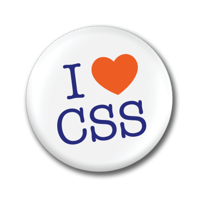

cmdgeo.nl
Recap
- Semantiek (3x woordwaarde)
- Anatomie van HTML elementen
- Nesten in de DOM tree
- Validatie van HTML (syntaxis)
- Veel gebruikte HTML elementen
Wat is CSS?
CSS geeft webdesigners controle over de visuele presentatie van HTML pagina's.
Hoe gaat je browser om met CSS?

Drie manieren om CSS te koppelen
- inline via een stijlattribuut op een element
- intern, via een <style> element in het <head> element
- extern, via een <link> element in het <head> element
Scheiding van inhoud, vormgeving (en functionaliteit)
Wij accepteren ALLEEN externe CSS. Intern of inline betekend automatisch een onvoldoende beoordeling. Valideer ook jouw CSS code met de W3C CSS Validator.
Waarom op die manier?

Voordelen van die manier
- Consistentie: je layout wordt in alle pagina's op dezelfde manier toegepast.
- Indexeerbaarheid: Crawlers kunnen jouw pagina beter indexeren.
- Onderhoudbaarheid: als je je code veel later terugleest snap je nog steeds wat er gebeurd.
- Overdraagbaarheid: als anderen jouw code lezen snappen ook zij wat er gebeurd.
- Toegankelijkheid: doordat je code clean is kunnen hulpprogramma's deze goed aanpassen aan de behoefte van de gebruiker.
Hoe werkt CSS?
Soorten selectoren
- universeel
- type
- class
- (pseudo-class)
- id
- child
- descendant
- adjacent sibling
- general sibling
Kleuren
- #ff0000
- rgb(255,0,0)
- rgba(255,0,0,1)
- red
Typografie
standaard lettertypes google web fontsRecap
Studievragen
- Wat is het verschil tussen inline, intern/embedded en externe CSS-code?
- Hoe kan je jouw CSS code valideren?
- Hoe ziet de anatomie van een CSS-regel er uit?
- Welke verschillende soorten selectoren zijn er?
- Wat wordt bedoeld met het woord 'Cascading' in CSS (Cascading StyleSheets)?
- Wat wordt bedoeld met 'overerving' (inheritance) binnen CSS?
Huiswerk
- Uit HTML & CSS: Lees hoofdstukken 7 en 8 tot p187 (ongeveer 44 pagina's)
- Op codecademy.com uit de HTML & CSS track: CSS: An Overview en CSS Selectors
- Maak aanpassingen aan het HTML gedeelte op basis van de ontvangen feedback.
- Optioneel: Ga verder met de HTML essential training op Lynda.com (via het Lynda Portal van de HvA)